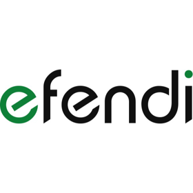
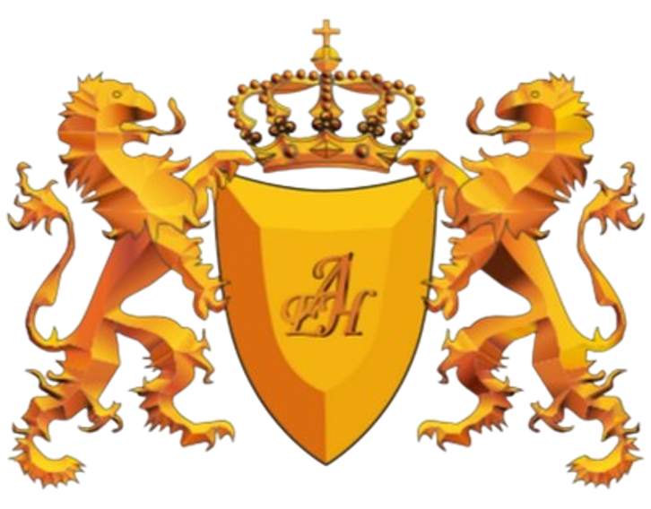

Ivan Karbashevskyi
Frontend Developer
With over ten years of experience in IT, including more than six years in the European technology sector and four years as a programmer outside of Europe.
Specializing in frontend development and managing teams and projects.
Possessing advanced skills in creating web applications using the Angular framework and implementing Progressive Web Apps (PWA).
Led frontend teams, introducing innovative working methods that resulted in significant efficiency improvements.
Created the first portal in Ukraine that published the city's budget expenditures.
Holding two degrees in computer science from AEH in Warsaw: Master of Engineering in Computer Science (2022-2024) and Engineer in Computer Science (2017-2021).
Skills
- Leadership and Management:
- I have experience as a technical leader and in project management. I am effective in optimizing business processes and developer processes. I am skilled in planning sprints in Scrum. I actively support team members in learning new technologies and solving technical problems, contributing to their professional development.
- Technologies and Tools:
- I am proficient with tools such as Docker, Docker Compose, Telerik Kendo, MSAL, and Microsoft tools (Jira, Confluence, Teams). I use Firebase and CI/CD, and develop PWA applications.
- Programming languages and frameworks:
- I program in JavaScript, TypeScript and PHP (Yii2). I have experience with Angular, AngularJS, AngularDart, jQuery, Flutter and IONIC frameworks, as well as application state management using NGXS and NGRX.
- Design and Development:
- I develop mobile applications using IONIC and Flutter, and design web portals using jQuery, Angular, Yii2, AngularJS and AngularDart. I do RWD (Responsive Web Design) and TDD (Test-Driven Development) and unit testing (Jest). I create and promote open source projects and software development.
- Design and User Experience:
- I am skilled in graphic design using Figma and Tailwind, and I take care of accessibility according to WCAG.
- Soft Skills:
- Strong communication
- Problem-solving
- Attention to detail
- Time management
- Other:
- I am involved in data validation and SEO optimization. I have experience in integrating payment and authorization systems. Also, to solve problems independently, analyze client proposals, graphically present what the client asks for, collaborate with colleagues, explain to colleagues what works and how it works and why. Ability to accept outside opinions and focus on what is important.
Work experience

UNICARD Systems Sp. z о.о. – Krakow
October 2021 - Present
Frontend Develop
- Experience and Development: I was hired as a FRONTEND DEVELOPER.
- Promotion: Quickly promoted to the position of the frontend tech leader, which involved conducting training for colleagues and introducing modern methods of analysis, planning, and task implementation.
- SCRUM: The team taught me to work according to the SCRUM methodology, which allowed for effective project management.
- Responsibilities:
- Refactoring projects and creating unit tests using Jest.
- Introducing new functionalities according to Scrum methodology.
- Configuring the environment and project, enabling work in different scenarios using Docker and Docker Compose.
- Introducing new tools: Telerik Kendo and Microsoft Authentication Library (MSAL).
- Upgrading Angular versions: Speeding up project build by twice, reducing task implementation compilation time by thrice, and speeding up the production version by ~60%.
- PWA: Implementing Progressive Web App (PWA) improved customer convenience, leading to increased positive feedback and sales.
- Figma Training: Trained the frontend team and some employees to use Figma, allowing developers to focus on work instead of minor consultations with colleagues.
- Collaboration: Worked in a team with testers, the backend team, and a business analyst, using tools like Jira, Confluence, Teams, and other Microsoft products.
- Current Responsibilities:
- Expanding the frontend team, accelerating goal achievement.
- Further refactoring of older project parts and a "mobile first" approach with adaptive design for different settings.
- Transition to Tailwind and NGXS from NGRX.
- Implementing timezone and user language support.
- Achieving WCAG requirements for better application accessibility.
- Planning: New planning methods reduced the number of unimplemented tasks by half and decreased frontend team sprint planning time by ~40%.

SKK S.A. – Krakow
March 2023 – October 2023
.NET Developer
- Position: Frontend Developer, involved in DevOps and frontend team leader.
- New Project Creation: Created a new project from scratch with the team, based only on a partially ready version in .NET.
- Migration: Transferred an existing project from .NET to Angular.
- Responsibilities:
- Planning implementation stages and estimating task completion time.
- Adding new features and using NGXS for state management.
- Collaboration: Worked within Scrum, closely collaborating with a tester and project manager.
- Tools: Used Telerik Kendo for interface creation.
- Approaches: Applied DDD (partially) and maintained part of TDD.
- Configuration: Built proper cloud server configuration in Azure and project configuration for different scenarios, e.g., without a hashtag in routing.
- Optimization: "Mobile First" principle, optimized interface for mobile devices (RWD and PWA).
- Success: Achieved project completion on time, allowing the team to return to the main company for ongoing work.

EFENDI – Warsaw
May 2018 – October 2021
Front-end developer
- Identified steps to reduce return rates by 10%, resulting in eventual $75k cost savings.
- Created mobile applications and web portals, including their interfaces, using various languages and frameworks:
- Languages and technologies: JavaScript, TypeScript, Dart, HTML/CSS, PHP.
- Frameworks and libraries: IONIC, JQUERY, Angular Material, Angular2+, AngularJS, AngularDart, Flutter.
- Interface design tools: Figma.
- State management: NgRX, MobX.
- Used Docker for efficient management of development environments.
- Managed tasks using YouTrack.
- Configured and maintained CI/CD with TeamCity.
- Integrated Firebase for push notifications.
Projects

Thiis
2021 - Present
Founder
- Created the open-source project Thiis, aiming to provide a package for vanilla JavaScript enabling easy and understandable data validation.
- Motivation: Need for precise and unambiguous data validation to avoid misinterpretation by both the system and developers, creating clear and simple validation code.
- Functionalities:
- Adding typing for better TypeScript support.
- Introducing simple validation syntax, e.g., is.object(variable) instead of complex conditions.
- Combining various validations, e.g., is.object_not_empty(variable).
- Support for global methods, e.g., is.HTMLElement(variable).
- All methods return boolean values, eliminating validation errors.
- The library's core uses JavaScript proxies for dynamic method calls based on names provided by developers.
- Example:
Instead of complex code:
if(typeof variable === 'object' && variable !== null && !Array.isArray(variable) && Object.keys(variable)?.length)use simpler and more readable:
if (is.object_not_empty(variable))
- Future Plans: Develop a command line tool to convert commands to inline code for faster program execution.
- Project Promotion: Actively promoting on platforms like medium.com and dev.to to increase project popularity.
Salo-Sale
2018 - 2020
Founder
- Founded and managed the Salo-Sale project, comprising a comprehensive system including an admin panel, mobile applications, and a public website.
- Technologies:
- Admin panel for project owner: Angular 6 (upgraded to Angular 7).
- Company panel: Angular 6 (upgraded to Angular 7), enabling management of the company page and handling orders.
- User mobile app: Flutter (for Android and iOS) with Google, Facebook, and Apple authentication integration. The app supported at least two languages: Ukrainian and English.
- Company mobile app: Features for scanning and redeeming virtual coins from user accounts, promoting offers, and discounts.
- Public website: Yii2 (PHP) optimized for SEO. o Server: Yii2 (PHP).
- Database: MariaDB.
- Key Achievements:
- Created and implemented a discount system for local businesses, attracting both residents and non - locals.
- Developed a mobile app allowing users to collect virtual coins for watching ads and exchange them for discounts or products offered by local businesses.
- Ensured customer satisfaction by continually improving the app and portal functionalities despite challenges posed by the COVID-19 pandemic.
- Even after the project closure, users continued to utilize collected discounts, especially in online businesses.
- Enabled businesses to offer products (e.g., pizza) for virtual coins, saving on promotion costs and gaining additional profits from selling drinks and extras with these products.
- Gained experience in project and team management, solving technical problems, and optimizing business processes.
- Fun Fact: Even after project closure, users actively utilized the system, collecting points and availing discounts in online businesses.
Education

2022 - 2024
Master of Engineering in Computer Science
AEH – Warsaw, Poland
2017 - 2021
Engineer in Computer Science
AEH – Warsaw, Poland
Articles
2024
Reactive Directive for Efficient Subscription Management in Angular
In Angular, it’s crucial to manage subscriptions to observables carefully to prevent memory leaks and unintended behavior.
2024
Adding TakeUntilDestroy Decorator: A Handy Tool for Angular Developers
In Angular, managing subscriptions to observables can be cumbersome, especially ensuring that they are properly unsubscribed when the component is destroyed.
2023
Human, AI, AGI.
As we all know, AI has been making significant progress over the years, and its applications are now prevalent in various industries, from healthcare to finance.